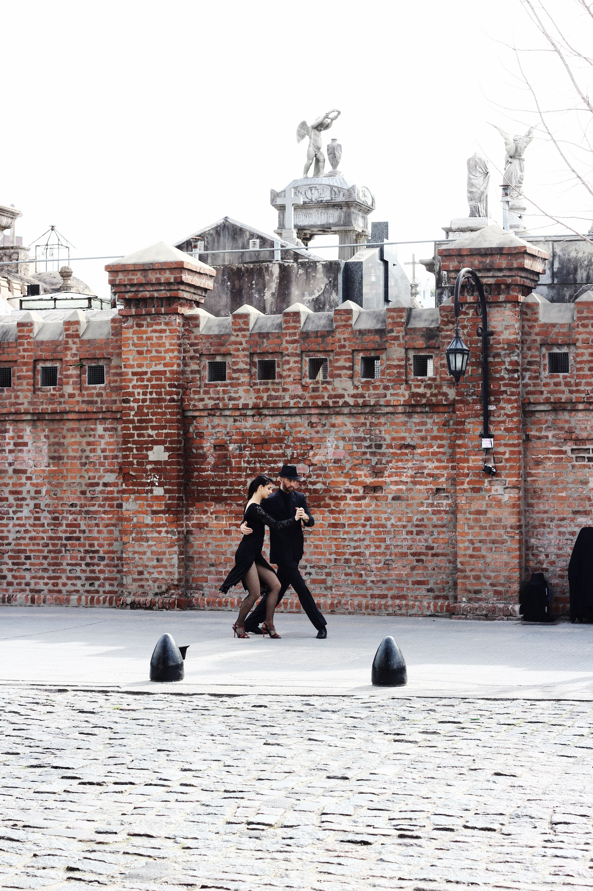
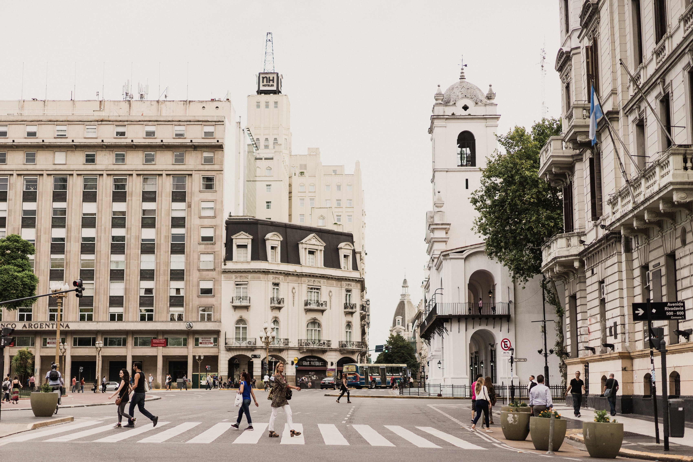
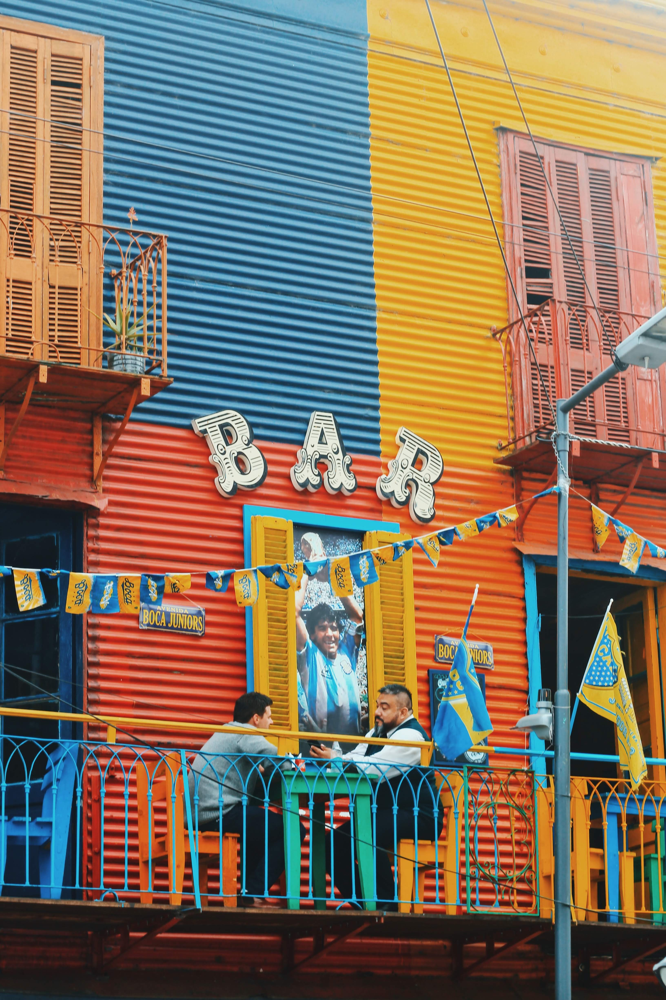
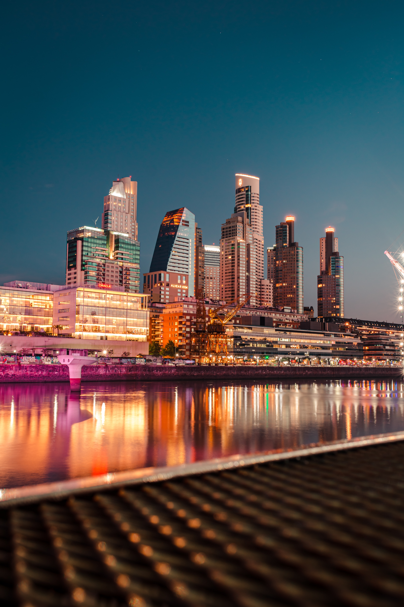
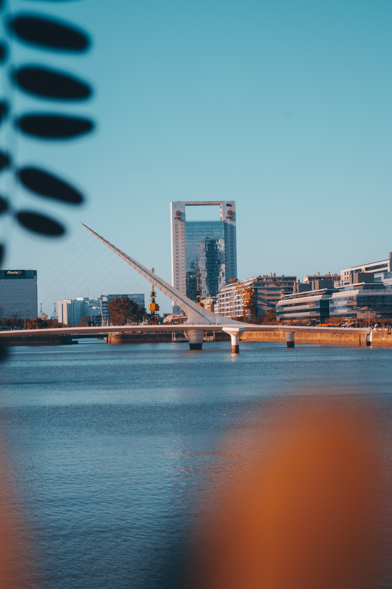

BUENOS AIRES
~!!!CLICK ANY IMAGE BELOW FOR MORE INFORMATION!!!~
Where is BUENOS AIRES?
It is located in ARGENTINA

Why visit BUENOS AIRES?
BUENOS AIRES is Argentina's big cosmopolitan capital city

What are some important spots?
Some cool ones to check out would be the Plaza de Mayo, Teatro Colon and the MALBA museum



What have other tourist said about it?
HERE ARE SOME REVIEWS FROM TRIPADVISOR.COM
"Buenos Aires is a friendly city for families. It is completely flat, thus ideal for walking without getting too tired, and there are attractions for all ages and tastes: museums, bookstores, cafes... not to mention the large number of outdoor spaces, parks, and squares! "-Gisele T
"There's a reason famed tango singer Carlos Gardel used to call this city "My beloved Buenos Aires" — like the romantic and emotional dance that originated here, the streets of BA tell stories of immigrants, love, struggle, passion, sorrow, and magic. It's all this, along with magnificent architecture, delicious food, and lovely people, that makes local residents (porteños) and tourists alike fall madly in love with Buenos Aires. A day may not seem like enough to explore its hidden streets and majestic promenades, but you can get a feel for the city's allure in that time. Here's what to do with your day in BA — activities that will have you longing to "volver" (return)."-FlorenciaFlor
"Buenos Aires is a vibrant city, renowned for its marvelous art and culture, welcoming people, great food and wines, tango and lively nightlife. It's a very special place, beautiful in its own unique way. It’s the kind of city travelers fall in love with. Follow these tips to get to the inside track on the delights of the city's "B side!""-Andrea G
